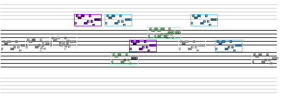

|
|||||||
This tutorial describes a class that generates a phrase then creates a (not so intelligent) structure from it through transposition to shift the notes up and down, and copying and pasting to different locations to show moving left and right in time.
Here is a score generated by this program:

This tutorial concerns the class ShiftAround.java
Click here to view the source.
Lets have a closer look.
import jm.JMC; import jm.music.data.*; import jm.music.tools.*; import jm.util.*; |
In order to make use of the jMusic constants we import the jm.JMC class. To use Note, Phrases, Parts, and Scores we import the jm.music.data package. The Mod class is in the jm.music.tools package. In order to see and hear the score we use the View and Write classes in the jm.util package.
public class ShiftAround implements JMC{
public static void main(String[] args) {
Score score = new Score("JMDemo - Simple Auto Arranging");
Part flutePart = new Part("Flute", FLUTE, 0);
Phrase phr1 = new Phrase();
double[] riff = {60, SQ, 67, SQ,
65, Q, 67, Q, 60, Q, 62, SQ, 67, SQ, 62, SQ, 59, SQ, 64, C}; |
After declaring the class we start the main() method. In this one-method class all the action happens in the main() method.
First up we declare some method variables for the score, part, and phrase.
Then we create an array of pitch and rhythmValue data which describes
the melodic riff.
// create an initial phrase phr1.addNoteList(riff); // make sequenced phrases Phrase phr2 = phr1.copy(); Mod.transpose(phr2, 2); Phrase phr3 = phr1.copy(); Mod.transpose(phr3, 4); // add phrases to the part flutePart.addPhrase(phr1); flutePart.addPhrase(phr2); flutePart.addPhrase(phr3); // add part to score score.addPart(flutePart); |
This section of code shows a melodic sequence. It is created by copying
and transposing the riff a couple of times.
After making and transposing the riffs they are added. By default in jMusic
phrases declared with no arguments - as done at the start of the method
- will be appended to the end of the part. So these three phrases will
play one after the other.
Finally, the part is added to the score.
A melodic sequence is a useful compositional device, and not hard to achieve as you can see.
//arrange at random later on double currentEnd = score.getEndTime(); int times = (int)(Math.random()* 8 + 7); for(int i=1;i<times;i++){ // make a copy of the phrase Phrase temp = phr1.copy(); // adjust the start time of the copy double newStart = (double)(int)(Math.random()*32) + currentEnd; temp.setStartTime(newStart); //shift the phrase in octaves at random Mod.transpose(temp, (int)(Math.random()*5 -2) *12); //add the copied phrase to the part then score Part p = new Part("Part "+i, 56 + (int)(Math.random() * 23), i); // avoid GM drums if (p.getChannel() == 9) p.setChannel(16); // package phrase into jm score p.addPhrase(temp); score.addPart(p); } |
This next section of code creates copies of the riff, sets them to start at a random location in time and adds them to a new part with a randomly selected instrument.
There are plenty of comments in the code to let you know what each line
does. Most importantly you should notice that jMusic composition can include
a combination of deterministic composition (the creation of the riff)
and some stochastic elements (the start times of the copied riffs).
The power in algorithmic music is in leveraging this stochastic and programmable
ability, while controlling and constraining the musical result within
the limits of your aesthetic preferences.
Mod.shake(score, 50);
// display
View.show(score);
//write a MIDI file to disk
Write.midi(score, "ShiftAround.mid");
}
}
|
The score is shaken - but not stirred :) - which is a Mod method that randomises the dynamic value of each note a bit, which makes it sound somewhat less mechanical on playback. Although the setting in this example, 50, is quite extreme.
The score is shown in a hybrid notation/piano roll display, as above, then written out to a MIDI file for auditioning.